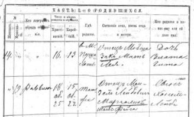
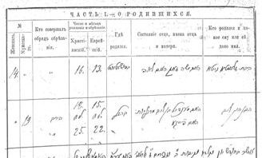
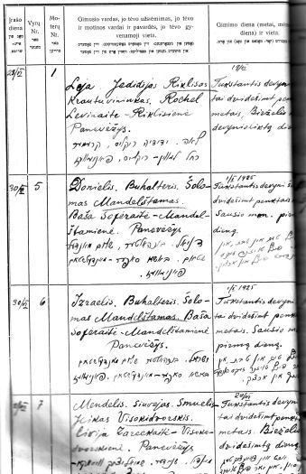
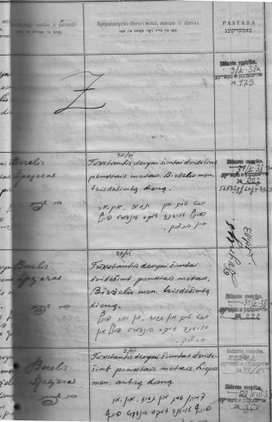
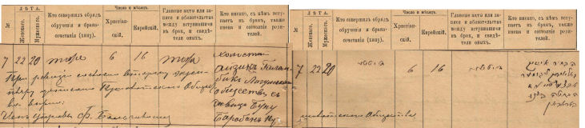
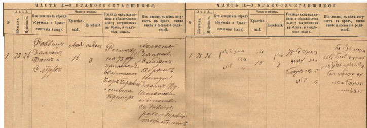

Lithuania Vital Records Database
This database contains Jewish birth, marriage, divorce
and death records from Lithuania.
This includes records which were microfilmed by the
Genealogical Society of Utah (see
Locality Index),
as well as non-microfilmed records indexed in archives in Lithuania.
The records during the Czarist period (i.e. those before 1918)
were written in both Russian (Cyrillic alphabet) and Hebrew script,
although some records are in Russian language only.
The records during the period of Lithuanian independence
(i.e. those created between 1919 and 1940) were written in the
Lithuanian language, with some Hebrew and Yiddish.
This database currently contains over 300,000 records for
74 towns in Lithuania (see Records Included).
Background
According to the Regulations of 1835 in the Russian Empire, one of
the duties of an official state rabbi (a "crown rabbi") was to carry out,
solely by his offices, all the rites of circumcision and naming of
infants, weddings, dissolution of marriages, and burials
"(in populous cities a rabbi could have assistants to carry out
those rites)"; to keep metrical books in all its sections and
to submit copies of them annually to gubernia authorities, in
Hebrew and Russian language.
References:
- Еврейскяя
Энциклопедія
Evreiskaia Entsiklopediia [Jewish Encyclopedia]
(St. Petersburg: Brokhaus-Efron, 1906-1913). Vol XIII.
- Levanda Index - KRA, Fond I-49, inventory 1,
files 4103, 30048.
Record Format
Birth Records
The birth records typically contain the following information:
- Name of the child. Surname and Given Name(s).
Where there are two names separated by a slash ("/"), one is
transliterated from the Russian, one from the Hebrew (in the
pre-WWI Czarist records); or the second name in square brackets
is the Lithuanian nominative form
(in the post-WWI records).
- Father's Given Name, Paternal Grandfather's Given Name.
- Mother's Given Name, Maternal Grandfather's Given Name.
- Mother's maiden surname (usually given if mother is not
married).
- Date of Birth — Day, month and year of birth,
in dd/mm/ccyy format.
(See Notes on Dates below).
- Hebrew Date — Day and month of birth, according to
the Jewish calendar.
- Place of birth —
Town, Uyezd (district) and Gubernia (province).
- Comments — which may include the status (class)
and/or occupation of the father.
- Place registered —
the town where the birth was recorded.
- Year —
the year that the birth was registered.
- Record — the Registration number of birth
(number is proceeded by "F" for female or "M" for male).
- Microfilm / Item —
the FHL microfilm number and microfilm item number,
if a microfilmed record; or "Not Microfilmed" if not.
- Image # —
The Image number on microfilm, if available
(this will enable you to locate the record on the microfilm).
- Archive / Fond —
The Archive and Fond citation — the source of the birth record.
"LVIA" = Lietuvos Valstybės Istorijos Archyvas (Lithuanian State
Historical Archives), in Vilnius; "KRA" = Kaunas Regional Archives.
Here are some illustrations of sample pages of birth registers.
Click on each image for a larger view.
1874 Births, Pumpėnai
Two pages: the Cyrillic (Russian language) is on the left side,
and the Hebrew is on the right side.
-
The first line is female birth #14:
daugher Zlata Gita. Father: Movshe ZAK, Mother: Lea.
Born in Pushalot [Pušalotas] on
June 16 [1874] = 13 [Tammuz].
-
Second line is male birth #19:
son Chonel Leib. Father: Mendel Leibovich MARGOLIS, Mother Feiga.
Born in the same place [Pushalot], on
June 18 [1874] = 15 [Tammuz], Bris on June 25 [1874] = 22 [Tammuz].
Source: birth records book of Pumpėnai Jewish community of 1874.
LVIA. F.1226., Ap. I., B.594.L. 8v.-9.
|


|
|
1925 Births, Panevėžys
During the period of Lithuanian independence (1919-1940),
Jewish civil records were written in both the Lithuanian and
Yiddish languages.
These two pages contain four birth records.
The first is for a female (hence the columns for
circumcision are blank), the next three are for males.
Translation is below.
Source: Panevėžys archives.
|
|


Translation of the first two records above:
-
The first line is female birth #1, written on 28/VI [June 28, 1925]:
Daughter: Leia. Father: Yedidia RIKLIS, merchant.
Mother: Rokhel LEVIN-RIKLIS.
Born in Panevėžys, on 19/VI [June 19, 1925].
-
The second line is male birth #5, written on 30/VI [June 30, 1925]:
Son: Doniel. Father: Šolom MANDELŠTAM, [Sholom MANDELSHTAM],
bookkeeper. Mother: Baša [Basha] SOFER-MANDELSHTAM.
Born in Panevėžys, on 1/I/1925 [January 1, 1925], Tevet 5685.
Circumcision date: 30/VI [June 30, 1925], Tammuz 5685.
Rabbi: Berel ŠPEJER.
|
|
The column headings in the original czarist (pre-1918)
birth registers are, from left-to-right:
- Number — Sequential birth number for this year.
Two columns: the first one is for females, the second for males.
- Who performed the circumcision.
- Day and month of birth and circumcision —
Two columns: Christian / Jewish.
(Note that the "Christian" date refers to the Julian
calendar. See Notes on Dates below).
- Where was he/she born.
- Name of father and mother.
- Who was born, and what name was given to him/her.
The column headings in the original Lithuanian (1919-1940)
birth registers are, from left-to-right:
- Day of record
- Male Number (Sequential birth number for this year).
- Female Number (Sequential birth number for this year).
- Name of the born child, the father's occupation,
the father's and mother's name, the father's place of residence.
- Date of birth (year, month, day), and birth place.
- Name of Rabbi.
- Circumcision date (year, month, day).
- Notes.
Marriage Records
The columns in the marriage and divorce records database are
as follows:
- Marriage Place: Town / Uyezd / Gubernia —
The place where the marriage occurred: The name of the
town, the uyezd (district), and gubernia
(province).
- Marriage Date —
The date that the marriage or divorce took place.
Two dates were recorded: The Secular date (day, month and year,
in dd/mm/ccyy format — see
Notes on Dates below),
and the Hebrew date (day and month, according to the
Jewish calendar).
- Groom Name / Bride Name —
Surname and Given Name(s) of the groom and bride.
Where there are two names separated by a slash ("/"), one is
transliterated from the Russian, one from the Hebrew (in the
pre-WWI Czarist records); or the second name in square brackets
is the Lithuanian nominative form
(in the post-WWI records).
- Groom's Father, Mother & Place /
Bride's Father, Mother & Place —
The given name(s) of each of the party's
father and mother, and their place of residence.
- Groom Age / Bride Age —
Age (or occassionally, the year of birth) of the groom
and bride.
- Comments —
Any miscellaneous information about this marriage, divorce,
or the parties.
- Rabbi / Witness 1 / Witness 2 —
The name of the rabbi, and two witnesses.
- Place Recorded —
the town where the marriage or divorce was recorded.
- Year Recorded —
the year that the marriage or divorce was recorded.
- Record Type —
either "Marriage" or "Divorce".
- Record # —
the registration number of the marriage or divorce.
- Microfilm / Item —
the FHL microfilm number and microfilm item number,
if a microfilmed record; or "Not Microfilmed" if not.
- Image # —
The Image number on microfilm, if available
(this will enable you to locate the record on the microfilm).
- Archive / Fond —
The Archive and Fond citation — the source of the record.
"LVIA" = Lietuvos Valstybės Istorijos Archyvas (Lithuanian State
Historical Archives), in Vilnius; "KRA" = Kaunas Regional Archives.
Here are some illustrations of sample pages of a marriage register.
Click on each image for a larger view.
1895 Marriages, Pušalotas:

1900 Marriages, Pušalotas:

Translation of the above two records:
-
Jewish marriage records of Pushalotas, 1895.
Record Nr. 7.
Date of marriage: 6th August 1895.
Place of marriage: Pushalotas.
Rabbi: Datkovski and Sluzh.
Witness: Movsha Kremer and Masil. The script on 75 roubles.
Groom: Aizik GALOMBIK, single, 20 years old, from Ligumai community.
Bride: Buna BARABAN, unmarried woman, 22 years old, from Pushalotas community.
-
Jewish marriage records of Pushalotas, 1900.
Record Nr. 1.
Date of marriage: 18th May 1900.
Place of marriage: Pushalotas.
Rabbi: Zalman Dat and Sluzh.
Witness: Ber Berkovich and Movsha Kremer. The script on 75 roubles.
Groom: Abram-Shmuel ZLOT, reserve soldier, single, 26 years old,
from Pushalotas community.
Bride: Rokhel GUREVICH, unmarried woman, 25 years old, from Pushalotas community.
|
The column headings in the original czarist marriage registers are,
from left-to-right:
- Number — Sequential marriage number for this year.
- Ages —
Two columns: the first one is for the bride, the second for
the groom.
- Who performed the marriage.
- Day and month (of the marriage) —
Two columns: Christian / Jewish.
(Note that the "Christian" date refers to the Julian
calendar. See Notes on Dates below).
- Main documents or records between the marriage parties,
and witnesses.
- The names of who is marrying whom, and the names and
occupations of their parents.
Death Records
The death records typically contain the following information:
- Name of the deceased. Surname and Given Name(s).
Where there are two names separated by a slash ("/"), one is
transliterated from the Russian, one from the Hebrew (in the
pre-WWI Czarist records); or the second name in square brackets
is the Lithuanian nominative form
(in the post-WWI records).
- Father's Name.
- Mother's Name.
- Spouse —
Given Name(s) and surname of surviving spouse, if listed.
- Date of Death — Day, month and year of death,
in dd/mm/ccyy format.
(See Notes on Dates below).
- Hebrew Date — Day and month of death, according to
the Jewish calendar.
- Cause of Death.
- Age of the deceased.
- Place of death —
Town, Uyezd (district) and Gubernia (province).
- Place of residence —
The town where the deceased resided.
- Comments
- Place Recorded —
the town where the death was recorded.
- Year —
the year that the death was registered.
- Record —
the registration number of death
(number is proceeded by "F" for female or "M" for male).
- Microfilm / Item —
the FHL microfilm number and microfilm item number,
if a microfilmed record; or "Not Microfilmed" if not.
- Image # —
The Image number on microfilm, if available
(this will enable you to locate the record on the microfilm).
- Archive / Fond —
The Archive and Fond citation — the source of the death record.
"LVIA" = Lietuvos Valstybės Istorijos Archyvas (Lithuanian State
Historical Archives), in Vilnius; "KRA" = Kaunas Regional Archives.
The column headings in the original czarist death registers are,
from left-to-right:
- Number — Sequential death number for this year.
Two columns: the first one is for females, the second for males.
- Where died and buried.
- Day and month (of death) —
Two columns: Christian / Jewish.
(Note that the "Christian" date refers to the Julian
calendar. See Notes on Dates below).
- Age (of the deceased).
- Illness or cuase of death.
- Who died.
Records included in this Database
The following table contains the inventory of records
currently included in this database.
The modern Lithuanian name of each town is followed by
the town's Yiddish name, shown in italics and Hebrew
characters; and then the town's pre-WWI Russian name,
in Cyrillic.
| Town |
Record
Type |
Year(s) |
Source |
# of Records |
| B |
M |
D |
|
Alytus
district
Alita
אַליטע
Олита |
Births |
1922-39 | LVIA |
1,679 | |
| Marriages |
1881-1939 | LVIA | |
667 | |
| Divorces |
1897-1939 | LVIA | |
17 | |
| Deaths |
1916-18, 1922-39 | LVIA |
| 764 |
|
Anykščiai
Aniksht
אַניקשט
Аникщяй |
Marriages |
1922-1926 | LVIA | |
99 | |
| Deaths |
1922-1926 | LVIA |
| 93 |
|
Ariogala
Ragole
אײראַגאָלע
Эйрагола
|
Births |
1858 | FHL | 18 | |
|
Aukštoji Panemune
Panemun Frentzele
פּאַנעמון
Понемонь |
Births |
1818-1825 | FHL | 18 | |
| Deaths |
1826-1837 | FHL | | 375 |
|
Babtai
Bobt
באַבט
Бобты |
Births |
1875-1891, 1913-1914 | FHL | 297 | |
| Marriages |
1872-1902 | FHL | | 111 | |
| Deaths |
1875-1914 | FHL | | 129 |
|
Bagaslaviškis
Bogoslavishok
באָגאָסלאַווישאָק
Богуславишки
|
Births | 1873, 1877-1879, 1885, 1886 | FHL | 176 | |
| Marriages | 1854-1861, 1863-1870, 1872 | FHL | | 40 | |
| Deaths | 1854-1856, 1858-1870, 1872 | FHL | | 60 |
|
Balbieriškis
Balbirishok
באַלבירישאָק
Бальвержишки
|
Births | 1808-1827 | 2205115 | 161 | |
| 1828-1873, 1889, 1903 | not filmed | 960 |
| Marriages | 1828 | not filmed | | 1 | |
| 1858-1870, 1903 | 2331377, 2205115 | 73 |
| Deaths |
1828, 1858-1873, 1889, 1903 |
2288943, 2331377, 2205115 |
| 156 |
|
Biržai
Birzh
בירזש
Биржи |
Births |
1852, 1861-63, 1865-1887, 1891, 1893-1914 | FHL | 3,520 |
|
| Marriages |
1862-1914 | FHL |
| 833 | |
| Divorces |
1890-1892 | LVIA |
| 8 | |
| Deaths |
1861-1910, 1913-14 | FHL | |
2,216 |
|
Biržai district
Birzh
בירזש
Биржи |
Deaths |
1922-1939 | LVIA | |
253 |
|
Butrimonys
Butrimantz
בוטרימאַנץ
Бутрыманцы |
Births | 1866 -1884, 1888-1890, 1893 -1912, 1914 | FHL | 1,175 | |
| Deaths |
1922-1926 | LVIA | | 69 |
|
Čekiške
Tzeikishok
צײַקישאָק
Чекишки |
Births |
1865-1906 | FHL | 919 | |
| Marriages |
1863-1914 | FHL |
| 212 | |
| Divorces |
1871-1872 | FHL |
| 2 | |
| Deaths |
1862-1914 | FHL | | 498 |
|
Dotnuva
Dotneva
דאַטנעווע
Датново |
Births |
1836-1837, 1844, 1854-1914 | FHL |
390 | |
| Marriages |
1854-1890 | FHL | | 91 | |
| Deaths |
1854-1914 | FHL | | 222 |
|
Dusetos
Dusiat
דוסיאַט
Дусяты |
Marriages |
1922-1926 | FHL | | 26 | |
| Deaths |
1922-1926 | FHL | | 51 |
|
Gelvonai
Gelvan
געלוואַן
Гелваны |
Births | 1854-1872 | FHL | 178 | |
| Marriages | 1854, 1856-1860, 1863, 1865-1872 | FHL | | 31 | |
| Deaths | 1854-1872 | FHL | | 152 |
|
Grinkiškis
Grinkishok
גרינקישאָק
Гринкишки |
Births |
1844, 1873-1914 | FHL | 536 | |
|
Jonava
Yanove
יאַנעווע
Яново |
Births |
1851-1914 | FHL | 5,792 |
|
| 1922-31 | LVIA | 606 |
| Marriages |
1854-1914 | FHL |
| 1,308 | |
| 1927-1931 | LVIA | 81 |
| Divorces |
1856 / 1926 | FHL |
| 91 | |
| 1924-1931 | LVIA | 8 |
| Deaths |
1854-1914 | FHL |
| 3,708 |
| 1922-1930 | LVIA | 263 |
|
Joniškėlis
Yanishkel
יאַנישקעל
Иоганишкели |
Births |
1899 | FHL | 10 | |
| Marriages |
1887-1893, 1899 | FHL |
| 14 | |
| Deaths |
1912-1914 | FHL |
| 7 |
|
Joniškis district
Yanishok
יאַנישאָק
Йонишки |
Marriages |
1927-1939 | LVIA |
| 207 | |
| Divorces |
1926-1937 | LVIA |
| 8 | |
| Deaths |
1919-1939 | LVIA | | 589 |
|
Josvainiai
Yosven
יאָסווען
Ясвойни |
Births |
1836-1837, 1844, 1873-1914 | FHL |
868 | |
| Marriages |
1844-1906 | FHL |
| 158 | |
|
Kaišiadorys
district
Koshedar
קאָשעדאַר
Кошедары |
Births |
1918-1940 | LVIA |
1,025 | |
|
Kalvarija
Kalvarye
קאַלװאָריע
Калвария
| Marriages | 1890-1939 | not filmed | | 23 | |
| Divorces | 1922-1936 | not filmed | 12 |
| Deaths | 1922-1939 | not filmed | | 392 |
|
Kapčiamiestis
Kopcheve
קאָפּטשעווע
Копциово
| Births | 1809-1825 | not filmed | 24 | |
| Marriages | 1810-1825 | 746639; 746640 | | 5 | |
| Deaths | 1810-1824 | 746639 | | 10 |
|
Kaunas
Kovne
קאװנע
Ковно |
Births |
1842-43, 1849-50, 1854-55, 1858-63, 1865-66, 1880-85 | FHL |
7,898 | |
| Marriages |
1881-1908 | FHL | |
3,398 | |
| 1922 | LVIA | 372 |
|
Kėdainiai
Keidan
קיידאַן
Кейданы |
Births |
1822, 1848, 1851-52, 1854, 1856-60, 1862-63, 1865-71, 1873-88,
1892, 1895, 1897, 1899, 1901-03, 1906-10, 1912-14 |
FHL | 4,262 | |
| 1922-1939 | LVIA | 1,391 |
| Marriages |
1838, 1849, 1854-55, 1859-61, 1865, 1867-1900 | FHL |
| 1,247 | |
| 1922-1939 | LVIA | 555 |
| Divorces |
1854-1912 |
FHL | | 252 | |
| Deaths |
1854-1910 |
FHL | | 3,424 |
| 1922-1939 | LVIA | 616 |
|
Krakės
Krok
קראָק
Кроки |
Births |
1844, 1854-1864, 1891-1912 |
FHL | 975 | |
| Marriages |
1844, 1854-1864, 1891-1914, 1922-1939 | FHL + LVIA |
| 400 | |
| Divorces |
1885-1912 | LVIA |
| 17 | |
| Deaths |
1844, 1854-1864, 1878, 1891-1914, 1922-1939 | FHL + LVIA |
| 807 |
|
Krekenava
Krakinove
קראַקינאָווע
Кракиново |
Marriages |
1922-1926 | LVIA |
| 27 | |
| Deaths |
1922-1926 |
LVIA | | 35 |
|
Kudirkos Naumiestis
Nayshtot Shaki
נײַשטאָט־שאַקי
Владиславов
|
Births | 1870, 1874-1882 |
725624; 725626; 725627; 725628; 2343143 |
232 | |
| Marriages | 1817-1850 | 2205115 | | 229 | |
| 1851-1926 | not filmed | 443 |
| Deaths | 1812-1851 | FHL | | 1,509 |
| 1852-1926 | not filmed | 1,673 |
|
Kupiškis
Kupishok
קופּישאָק
Купишки |
Births |
1900, 1905-14 | FHL | 554 | |
| 1920-1940 | LVIA | 414 |
| Marriages |
1870-71, 1874-75, 1877-1914 | FHL |
| 734 | |
| 1922-1940 | LVIA | 247 |
| Divorces | 1898-1901 |
FHL | | 4 | |
| Deaths |
1871-1881, 1883-84, 1886-87, 1889-92, 1894-95, 1897-1900, 1906-14 |
FHL | | 1,291 |
| 1920-1940 | LVIA | 257 |
|
Lazdijai district
Lazdei
לאַזדיי
Лаздияй |
Births |
1919-39 | LVIA | 327 |
|
| Marriages |
1919-39 | LVIA | |
153 | |
| Divorces |
1919-39 | LVIA | |
7 | |
|
Laukuva
Loikeve
לויקעווע |
Marriages |
1852-1854, 1857-1863 | LVIA |
| 40 | |
|
Leipalingis
Leipun
לייפּון
Лейпуны
| Births | 1810-1825 | 746639; 746640 | 36 | |
| Marriages | 1811-1815 | 746653; 746654; 746655 | | 9 | |
| Deaths | 1808-1825 | 746653 | | 35 |
|
Linkuva
Linkeve
לינקעװע
Линково |
Births |
1859, 1862, 1865-1878 | FHL | 704 |
|
| 1895-1914, 1922, 24, 25 | LVIA | 512 |
| Marriages |
1865-66, 1869-80 | FHL |
| 160 | |
| 1881-1914, 1922-1926 | LVIA | 375 |
| Divorces |
1882-1926 | LVIA | | 13 | |
| Deaths |
1865-1875, 1881-1898,1913-1914, 1922-1926 | FHL+LVIA |
| 960 |
|
Marijampolė
Mariampol
מאַריאַמפּאָל
Марьямполь
| Births | 1823 | 746653; 746654; 746655 | 25 | |
| Marriages | 1922-1939 | not filmed | | 391 | |
| Deaths | 1922-1939 | 2205115 | | 485 |
|
Merkinė
Meretch
מערעטש
Меречь |
Births | 1856, 1860, 1863-1867, 1869, 1872-1875, 1877 | FHL | 631 | |
|
Mikališkis
Mikhalishok
מיכאַלישאָק
Михалишки |
Births | 1854-1872, 1884-1887, 1923-1938 | FHL | 827 | |
|
Molėtai
Maliat
מאַליאַט
Маляты |
Births |
1853-1872 | FHL |
400 | |
| Marriages |
1854-1871 | FHL |
| 86 | |
| Divorces |
1855 / 1871 | FHL |
| 21 | |
| Deaths |
1853-57, 1859-72, 1898, 1900-02, 1904-15 |
FHL | | 1,052 |
|
Naujamiestis
נײַשטאָט־פּאָנעװעזש
Novoe Mesto |
Births |
1874, 1887, 1888 | LVIA | 38 | |
| Marriages |
1872, 1874 | FHL | | 8 | |
|
Nemunaitis
Nemoneitz
נעמונײַץ
Немонайцы |
Marriages | 1857, 1861, 1865-1867, 1870-1877, 1883-1889, 1891-1894, 1896-1903, 1906, 1909, 1912, 1913 | FHL | | 102 | |
| Divorces | 1871 | FHL | | 2 | |
| Deaths | 1863, 186, 1867, 1870-1877, 1889-1892, 1894, 1896-1911, 1913 | FHL | | 195 |
|
Obeliai
Abel
אַבעל |
Births |
1881-1915 | Moscow |
539 | |
| Marriages |
1887-1906 | Moscow |
| 125 | |
| Divorces |
1887-1906 | Moscow |
| 1 | |
| Deaths |
1881-1915 | Moscow |
| 231 |
|
Pakruojis
Pokroi
פּאָקראָי
Покрои |
Births |
1865-1888, 1894-1904 | FHL |
1,657 | |
| Marriages |
1865-1906 | FHL |
| 451 | |
| Divorces |
1876-1893 | FHL |
| 34 | |
| Deaths |
1856-1914 | FHL |
| 1,246 |
|
Panevėžys
Ponevezh
פּאָנעװעזש
Поневеж |
Births |
1844-1850, 1854, 1857-60, 1867, 1875-76, 1878, 1883, 1885, 1892-1905 |
FHL | 4,698 | |
| 1925-1940 | LVIA | 2,216 |
| Marriages |
1872-1875, 1878, 1880-1906 | FHL |
| 1,742 | |
| 1907-1940 | LVIA | 1,426 |
| Divorces |
1872-1909 | FHL |
| 87 | |
| 1907-1925 | LVIA | 36 |
| Deaths |
1872-1915 | FHL |
| 5,286 |
| 1922-1940 | LVIA | 1,840 |
|
Pasvalys
Posvel
פּאָסװאָל
Посволь |
Births |
1854-1858, 1866-1874, 1882-89, 1893-1906 | FHL |
2,108 | |
| Marriages |
1854-1861, 1867-1874, 1882-1906 | FHL |
| 576 |
|
| 1922-1939 | LVIA | 207 |
| Divorces |
1856-1868 | FHL |
| 3 | |
| Deaths |
1870-74, 1882-1915 | FHL |
| 979 |
| 1912-1914, 1922-1939 | LVIA |
319 |
|
Pašvitinys
Poshvetin
פּאָשוועטין
Пашвитин |
Deaths |
1922-1926 | LVIA | | 15 |
|
Plungė
Plungian
פּלונגיאַן
Плунгяны |
Births |
1837-42, 1857-60, 1863-67, 1878-82, 1901-1905 | FHL |
2,186 | |
| Marriages |
1846, 1848, 1854-1856, 1858-1861, 1875-1906 | FHL |
| 907 | |
|
Pumpėnai
Pompian
פּומפּיאַן
Помпяны |
Births |
1855, 1858, 1860-61, 1863-87, 1894-1906 | FHL |
1,862 | |
| Marriages |
1855, 1860-61, 1863, 1865-95 | FHL |
| 353 | |
| Divorces |
1855 / 1907 | FHL |
| 40 | |
| Deaths |
1854-56, 1859-61, 1865-1914 | FHL |
| 1,235 |
|
Pušalotas
Pushelot
פּושאַלאַט
Пушелаты |
Births |
1885-1912 | FHL | 475 | |
| 1922-1939 | LVIA | 97 |
| Marriages |
1883-1912 | FHL | | 127 | |
| 1904-1939 | LVIA | 27 |
| Deaths |
1883-1912 | FHL | | 245 |
| 1924-1939 | LVIA | 27 |
|
Raguva
Rogeve
ראָגעווע
Рогово |
Marriages |
1922-1926 | LVIA | | 46 | |
| Deaths |
1922-1926 | LVIA | | 43 |
|
Ramygala
Remigole
רעמיגאָלע
Ремигола |
Deaths |
1889, 1894, 1896 | FHL | | 68 |
|
Raseiniai
Rasayn
ראַסיין
Россиены |
Births |
1845 | FHL | 251 | |
| Marriages |
1844-45 | FHL |
| 60 | |
| Deaths |
1845 | FHL | | 224 |
|
Raseiniai district
Rasayn
ראַסיין
Россиены |
Marriages |
1922-1939 | LVIA |
| 354 | |
| Deaths |
1922-1939 | LVIA | | 914 |
|
Rokiškis
Rakishok
ראַקישאָק
Рокишкис |
Births |
1874-1896 | LVIA | 1,282 | |
| Marriages |
1874-1896 | LVIA | | 193 | |
| Deaths |
1874-1896, 1922-1939 | LVIA | | 1,680 |
|
Rokiškis district
Rakishok
ראַקישאָק
Рокишкис |
Births |
1922-1939 | LVIA | 1,403 | |
| Marriages |
1922-1939 | LVIA | | 447 | |
| Divorces |
1922-1939 | LVIA | | 13 | |
|
Rumšiškes
Rumshishok
רומשישאָק
Румшишки |
Births |
1854-1914 | FHL | 1,077 | |
|
Šakiai
Shaki
שאַקי
Шаки
| Births | 1848-1868 | not filmed | 1,147 | |
| Marriages | 1884-1939 | 2205116; 2205118 | | 140 | |
|
Saločiai
Salat
סאַלאַט
Салаты |
Births |
1874-1875 | FHL | 45 | |
| 1897-1901 | LVIA | 48 |
|
Shchuchyn
Shtutchin
שצ'וצ'ין
Щучин |
Births | 1896-1914 | FHL | 649 | |
|
Seredžius
Srednik
סרעדניק
Средники |
Births |
1844, 1865-1895, 1897-1906 | FHL | 1,240 | |
| Marriages |
1884-1906 | FHL | | 148 | |
| Divorces |
1856-1883 | FHL | | 3 | |
| Deaths |
1844, 1854-1902 | FHL | |
731 |
| 1903-1913 | LVIA | 152 |
|
Šiauliai district
Shavl
שאָװל
Шавли |
Deaths |
1922-1939 | FHL |
| 1,358 |
|
Šilalė
Shilel
שילעל
Шилели |
Births |
1914-1939 | LVIA | 319 | |
| Marriages |
1922-1939 | LVIA | | 138 | |
| Deaths |
1922-1939 | LVIA | | 269 |
|
Simnas
Simna
סימנע
Симнас |
Births |
1922-1926 | LVIA |
66 | |
| Marriages |
1922-1925 | LVIA | | 16 | |
| Deaths |
1922-1925 | LVIA |
| 26 |
|
Širvintos
Shirvint
שירווינט
Ширвинты |
Births |
1854-61, 1863-72 | FHL | 388 | |
| Marriages |
1854-72 | FHL |
| 70 | |
| Deaths |
1854-72 | FHL | | 147 |
|
Šnipiškės
Shnipishuk
שניפּישאָק
Кальварийские Снипишки |
Births | 1894, 1895, 1899 | FHL | 525 | |
|
Stakliškės
Stoklishok
סטאָקלישאָק
Стоклишки |
Births | 1854, 1855, 1857, 1871-1886, 1889-1893, 1895-1897, 1899-1908, 1910-1914 | FHL | 1,042 | |
| Deaths | 1854-1857, 1871-1887, 1889-1896, 1898-1900, 1902-1908, 1910-1913 | FHL | | 753 |
|
Telšiai
Telzh
טעלז
Тельши |
Marriages |
1854-1884 | FHL |
| 866 | |
|
Utena district
Utiyan
אוטיאַן
Уцяны |
Births |
1922-39 | LVIA | 962 |
|
|
Ukmergė
Vilkomir
װילקאָמיר
Вилькомир |
Births |
1895 | FHL | 268 |
|
| Marriages |
1922-1926 | LVIA |
| 234 | |
| Deaths |
1922-1939 | LVIA | |
1,076 |
|
Vabalninkas
Vabolnik
וואַבאָלניק
Вобольники |
Births |
1872-77, 1879-88, 1894-1902, 1904-10, 1912, 1914 | FHL |
1,290 | |
| Marriages |
1872-1880, 1882-1914 | FHL |
| 296 | |
| Divorces |
1876-1900 | FHL |
| 13 | |
| Deaths |
1872-1878, 1882-1914 | FHL | |
855 |
|
Vandžiogala
Vendzigole
ווענדזיגאָלע
Вендзягола |
Births |
1856-1892, 1913-1914 | FHL |
435 | |
| Marriages |
1854-1914 | FHL |
| 108 | |
| Deaths |
1856-1890, 1907-1914 | FHL |
| 167 |
|
Varniai
Vorne
וואָרנע
Ворни |
Births |
1852-1883 | FHL |
1,627 | |
| Marriages |
1852-1906 | FHL |
| 505 | |
| Deaths |
1852-1875, 1881-1889, 1893-1913 | FHL |
| 1,490 |
|
Veisiejai
Vishai
ווישיי
Вейсеяй
| Births | 1808-1825 | not filmed | 88 | |
| Marriages | 1809 | 752624; 752628 | | 9 | |
| Deaths | 1808-1825 | 752624 | | 76 |
|
Veliuona
Velon
ווילאָן
Велиона |
Deaths |
1844, 1862-1914 | FHL |
| 353 |
|
Vilijampolė
Slabodke
סלאַבאָדקע
Вилиянпольская |
Births |
1873-1876, 1880-1882, 1884-1885, 1890-1891 |
FHL | 2,407 | |
| Marriages |
1855-1914 | FHL |
| 1,548 | |
| Deaths |
1881 | FHL |
| 198 |
|
Vilkaviškis district
Vilkovishk
װילקאָװישק
Вилковишки |
Marriages |
1922-1939 | FHL |
| 363 | |
| Divorces |
1925-1936 | FHL |
| 15 | |
| Deaths |
1922-1939 | FHL |
| 756 |
|
Vilkija
Vilki
ווילקי
Вильки |
Births |
1838, 1840, 1847, 1854-1895, 1897-1914 | FHL |
2,533 | |
| Divorces |
1914 | FHL |
| 1 | |
| Deaths |
1844-1914 | FHL |
| 1,305 |
|
Vilna uyezd
3rd okrug [*]
ווילנע
Вильна уезд |
Births |
1892-1895 | FHL |
345 | |
| Marriages |
1893-1895 | FHL |
| 79 | |
|
Vilnius
Vilne
ווילנע
Вильна, Bильнюc |
Births | 1839-1853, 1860, 186-1873, 1891-1900 | FHL | 25,125 | |
| Deaths | 1837-1850, 1861-1871, 1878, 1879, 1881-1884, 1886-1900 | FHL | | 56,137 |
|
Žasliai
Zhosle
זאָסלע
Жосли |
Births | 1873, 1877-1879, 1885, 1886 | FHL | 86 | |
| Deaths | 1871, 1874 | FHL | | 54 |
|
Žeimelis
Zhemel
זײמל
Жеймели |
Births |
1860-62, 1864-70, 1873-80 | FHL |
496 | |
1881-88, 1893-1913, 1922-23, 1925-26
| LVIA |
666 |
| Marriages |
1858, 1860, 1862-80, 1882-1914 | FHL |
| 289 | |
| Deaths |
1859-60, 1862, 1864-71, 1873-1880 | FHL |
| 350 |
| 1882-1898, 1913-14, 1925-26 | LVIA | 298 |
|
Žiežmariai
Zhezmir
זעזמער
Жижморы |
Births | 1878-1885, 1887-1893, 1896-1904, 1906-1914, 1915 | FHL | 702 | |
| Deaths | 185, 186, 1878-1891, 1893-1896, 1900-1906, 1909, 1910, 1912-1914 | FHL | | 526 |
| TOTAL |
117,223 |
25,963 |
105,217 |
* Vilna uyezd (district), 3rd okrug (sub-district) includes these towns:
 Giedraičiai
Giedraičiai | 55°05' 25°17' 28 miles N of Vilna |
Гедройцы (Gedroĭtsy). |
|
Inturkė | 55°10' 25°33' 35 miles NNE of Vilna |
Интурки (Inturki). |
|
Molėtai | 55°14' 25°25' 38 miles N of Vilna |
Маляты (Maliaty). |
|
Nemenčinė | 54°51' 25°29' 13 miles NNE of Vilna |
Неменчин (Nemenchin);
(inter-war Niemenczyn, Wilno-Troki, Wilno, Poland). |
|
Paberžė | 54°56' 25°14' 18 miles N of Vilna |
Подберезье (Podberez'e);
(inter-war Podbrzezie, Wilno-Troki, Wilno, Poland). |
Inter-war Rabbinate Districts:
In independent Lithuania, between the two world wars (1919-1939),
Jewish vital records were organized by "rabbinate district",
especially after 1926.
These rabbinate districts generally corresponded to the
23
inter-war Lithuanian apskritis (districts),
and included:
- Alytus rabbinate district — includes:
Alytus, Butrimonys, Daugai, Jieznas, Merkinė,
Miroslavas, Nemunaitis, Seirijai, Simnas, Stakliškės, Varėna.
- Biržai rabbinate district — includes:
Biržai, Nemunėlio Radviliškis, Saločiai,
Vabalninkas.
- Joniškis rabbinate district — includes:
Joniškis, Krukiai, Linkuva, Pašvitinys,
Žagarė, Žeimelis.
- Kaišiadorys rabbinate district — includes:
Aukštadvaris, Čiobiškis, Darsuniškis,
Kaišiadorys, Lentvaris, Onuškis, Panošiškes,
Semeliskes, Vievis, Žasliai, Žiežmariai.
- Kėdainiai rabbinate district — includes:
Ariogala, Baisogala, Dotnuva, Josvainiai, Kėdainiai, Šeta.
- Lazdijai rabbinate district — includes:
Kapčiamiestis, Lazdijai, Leipalingis, Rudamina, Veisiejai.
- Raseiniai rabbinate district — includes:
Girkalnis, Jurbarkas, Nemakščiai, Raseiniai,
Šiluva, Tytuvėnai.
- Rokiškis rabbinate district — includes:
Jūžintai, Kamajai, Obeliai, Onuškis, Pandėlys,
Panemunėlis, Rokiškis, Skapiškis, Suvainiškis,
Svėdasai.
- Šiauliai rabbinate district — includes:
Gruzdžiai, Kuršenai, Lygumai, Pakruojis, Papilė,
Radviliškis, Šiaulėnai, Šiauliai, Tryškiai.
- Ukmergė rabbinate district — includes:
Bagaslaviškis, Balninkai, Gelvonai, Giedraičiai,
Kavarskas, Kurkliai, Musninkai, Šešuoliai, Siesikai,
Širvintos, Taujenai, Vidiškiai, Ukmergė, Želva.
- Utena rabbinate district — includes:
Anykščiai, Debeikiai, Kurkliai, Leliunai, Skudiskis,
Tauragnai, Utena, Užpaliai, Vyžuonos.
- Vilkaviškis rabbinate district — includes:
Pilviškiai, Vilkaviškis.
Is your town missing?
See below under Project Description and Needs
to see how your town's records can appear!
Notes
Notes on Lithuanian Surnames
The Lithuanian language adds specific endings to a surname, which
indicate whether an individual is single, married, male, female, etc.
This information can be very helpful when interpreting documents
written in Lithuanian.
Lithuanian endings are added to the root of the surname.
Several examples are below:
-
For a male, the suffix can appear as “-as”,
“-(i)us”, or “-is”.
KAGAN becomes KAGANAS (“-as” is the usual Lithuanian
ending for male surnames).
However, after a soft letter, such as “ch”,
the ending would be “-ius”, e.g.
KAGANOVITCH becomes KAGANOVITCHIUS.
-
For married women, without exception,
the surnames have the ending “-iene”.
The “-iene” suffix is added to the male surname root, e.g.
KAGAN becomes KAGANIENE, KAGANOVITCH becomes KAGANOVITCHIENE.
-
For unmarried women, (e.g. a single daughter), her surname depends
on her father's surname ending.
- If it was “-as”, it becomes “-aite”.
KAGANAS and his daughter KAGANAITE.
- If it was “-ius”, it becomes “-iute”.
KAGANOVITCHIUS - KAGANOVITCHIUTE.
- If it was “-is”, it becomes “-yte”.
KATCHERGINSKIS - KATCHERGINSKYTE.
Notes on Dates
The "Christian" date used in the Czarist registers refers to the
Julian calendar, used by the Russian Czarist government and
the Russian Orthodox Church. The Julian calendar was used in
Russia until the Russian Revolution of 1917.
The Gregorian calendar has been in use by the rest of Europe
since the mid-1700s, and is used worldwide today.
During the 1700s, the difference between the two calendars was
11 days. Beginning on March 1, 1800, there was a 12-day gap
between the two dates. On March 1, 1900, the difference became
13 days. The date difference will become 14 days on March 1, 2100.
For example, 2 July 1856 on the Julian calendar is 14 July 1856
on the Gregorian calendar. 24 June 1882 on the Julian
calendar is 6 July 1882 on the Gregorian calendar.
During the period of Lithuanian independence (i.e. 1919-1940),
the Gregorian calendar was used.
Acknowledgements
The English translation of the microfilmed vital records for
Biržai, Kupiškis, Panevėžys, Pasvalys,
Pušalotas, Rokiškis, and Saločiai
was done from the original records in the Lithuanian State Historical
Archive in Vilnius.
The translation work was paid for by Aaron Roetenberg, Howard Margol,
Rokiškis SIG, the Mamolen family and/or the Kupiškis SIG.
The Meister family contributed for Plungė.
Barry Mann donated all the translations for Žeimelis.
The English translation of the Pušalotas vital records that
were not microfilmed were translated by Howard Margol from the
original records with the help of a Lithuanian translator.
The Kupiškis vital records that were not microfilmed were
translated by Ann Rabinowitz.
Records for the towns of
Kėdainiai, Molėtai, Pumpėnai, Raseiniai,
Širvintos, Vilkija, and Vilna uyezd 3rd okrug were donated by
the LitvakSIG.
This introduction was written by Warren Blatt.
Illustrations provided by Aaron Roetenberg and Howard Margol.
Recommendations
Search the records using the Daitch-Mokotoff Soundex as well as
the exact name, due to variations in spelling, and because some
records were transliterated from Russian only and not Hebrew.
Search these records even if you know your relatives came from
a different town. Our relatives moved around quite a lot, so
the records that you are searching for could be in any database.
Project Description and Needs
This project can be very extensive and of great importance due to
the extreme value of vital records. In most cases, the birth record
includes the name of the father and the mother, which enables a researcher
to go back one more generation. The marriage record includes the name
of the parents and, on many records, the maiden name of the bride.
All vital records provide definite dates, which help to develop a timeline
on a family tree.
The English translation of the vital records is being done by qualified
translators in Lithuania, working with the original records.
This enables the translations to be extremely accurate.
Because of Lithuania's 100-year privacy law, private researchers are
not allowed to view the post-1912 birth and marriage records (a 50-year
privacy law applies to death records). Thru special arrangements
with the Lithuanian archives, the post-1912 vital records are being
translated and will become a part of this database.
The extent of this database depends entirely upon your help and
generosity. If you donate at a certain level (determined for each
town), all of the vital records translations for that town will be
sent to you. The ability to view all of a town's records can
oftentimes turn up unexpected and valuable results, which might not
be easily seen in a search of the database. If you are interested
in financing the translation for a town of your choice, please contact
the co-coordinators of the project –
Aaron Roetenberg or
Howard Margol.
To contribute to this project, please go to:
http://www.jewishgen.org/JewishGen-erosity.
Last Update: 9 Mar 2012 WSB
{kind=link}
{kind=link}
{kind=link}
{kind=link}
{kind=link}
{kind=link}